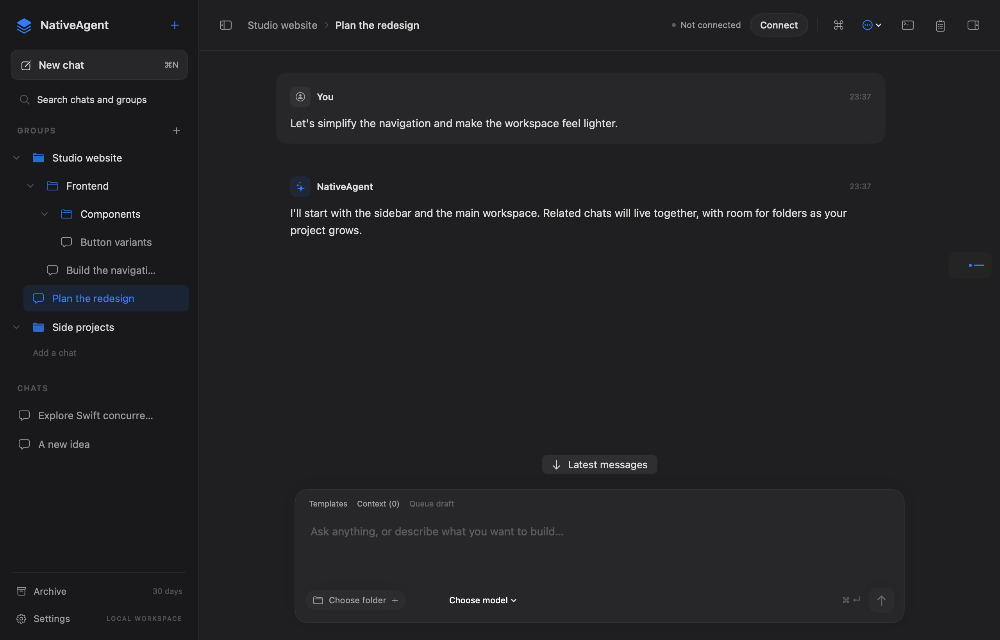

A NATIVE MACOS WORKSPACE
Your workspace.
Kept up to date.
Conversations, project files, and AI assistance. Together in a focused, native Mac app that gets better with every release.
Already installed? Do not download another copy. Choose NativeAgent → Check for Updates… in the app; it replaces the existing app in place.
macOS 14 or later Apple Silicon & Intel
Latest build available on GitHub Releases
BUILT FOR YOUR MAC
Room to focus.
Native controls. Local conversation history.
Your files, close at hand.

A SMALL DOWNLOAD. A SIMPLE ROUTINE.
Download once.
Keep moving.
Install the update-enabled version once. After that, use the updater inside NativeAgent. It reads the signed feed from this GitHub Pages site and replaces the same app bundle—it does not install “NativeAgent 2.app”.
View the signed update feedInstalling for the first time
Download the DMG (normally saved to Downloads), double-click it, then drag NativeAgent onto the Applications folder in the window. Open NativeAgent from Applications and eject the disk image. If replacing an older copy, quit it first and choose Replace; your chats and settings stay intact.
Automatic updates, on your terms
After this one-time installation, available updates appear at the top of the chat. Settings → Updates shows your version, automatic check/download controls and Check for Updates. Updates replace the existing app in place; you do not need another installer each time. Active tasks and unsaved edits postpone an updater-requested restart.
What is signed?
Sparkle verifies both the update feed and download using NativeAgent’s Ed25519 public key. This protects update integrity; it is separate from Apple Developer ID signing and notarization.